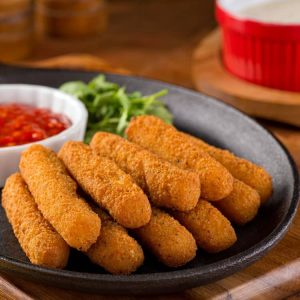

Fried Mozzarella Sticks
Crunchy on the outside, gooey on the inside—these mozzarella sticks are an irresistible snack.
Ingredients
- 12 mozzarella sticks
- ½ cup flour
- 2 eggs (beaten)
- 1 cup breadcrumbs
- ½ tsp garlic powder
- Oil for frying
Instructions
- Coat cheese sticks in flour, dip in egg, and roll in breadcrumbs.
- Freeze for 30 minutes to prevent cheese from melting too quickly.
- Heat oil to 350°F and fry sticks until golden brown.
- Drain excess oil and serve with marinara sauce.
Nutritional Info
Calories: 400 | Protein: 20g | Carbs: 30g | Fat: 25g
Allergens
Contains milk, eggs, and wheat.

Frying Tips
- Maintain oil temperature for even frying.
- Do not overcrowd the pan.
- Drain on paper towels to keep food crispy.